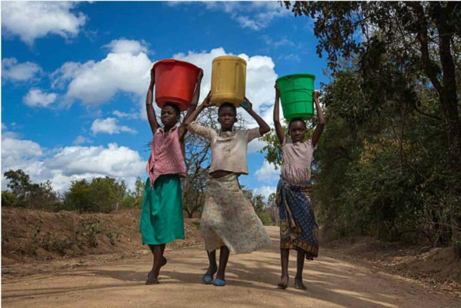
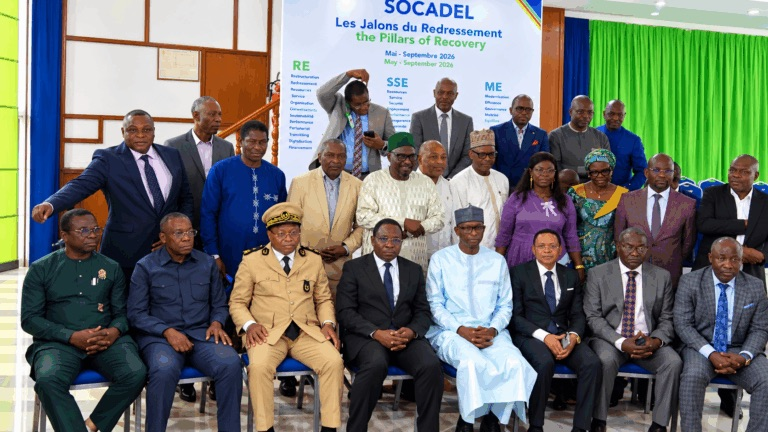
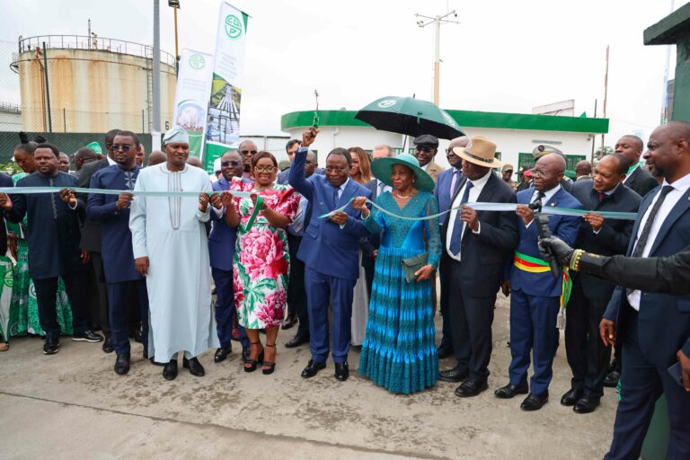
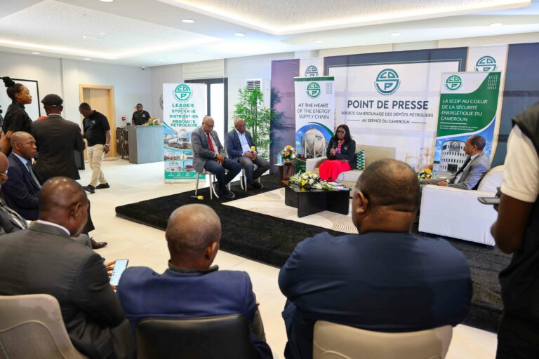

Économie
Énergie, finances publiques, agriculture, industrie : l’économie du Cameroun et de l’Afrique centrale.
28 articlesAlerte mondiale sur Internet : qu’est-ce que la crise « PHP2Shell » qui a fait trembler le Web ?
Au cœur de la panne mondiale, les défis de la souveraineté numérique et de la sécurité en Afrique.
Octobre 2026
Environnement
El Niño 2026-2027 : l’Afrique face à la menace d’un bouleversement climatique majeur

Énergie
Électricité au Cameroun : l’heure des résultats a sonné

Septembre 2026
Août 2026
Pétrole
SCDP : trois nouvelles infrastructures pour renforcer la sécurité énergétique du Cameroun

Énergie
Cameroun-Tchad : un méga-projet électrique de 557 milliards FCFA pour électrifier l’Afrique centrale

Pétrole
SCDP : le Cameroun écrit son avenir énergétique avec des infrastructures pétrolières d’envergure

Juin 2026
Agriculture
Agriculture au Cameroun : quand investissements massifs et innovations redéfinissent l’avenir du secteur
Pétrole
Baker Hughes s’installe à Douala : un coup de boost pour le secteur pétrolier camerounais en pleine crise ?
Agriculture
Blé local au Cameroun : le gouvernement mise 30,9 milliards FCFA pour briser la dépendance aux importations
Transports
Port de Kribi : la barre des 4 milliards FCFA de bénéfices franchie en 2025, mais le vrai défi est ailleurs
Articles 1 à 11 sur 28Articles plus anciens